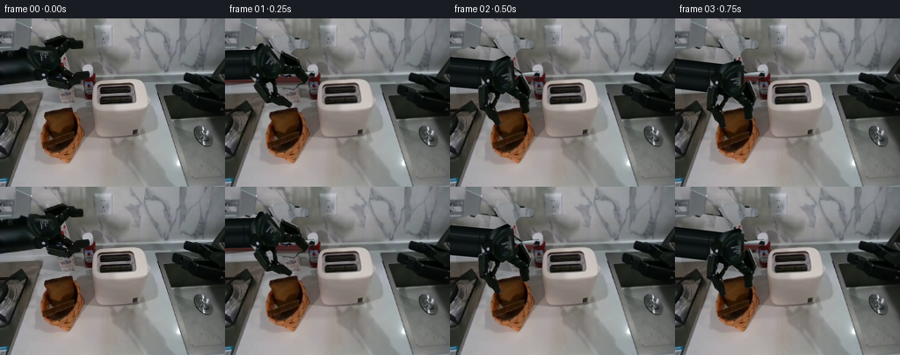
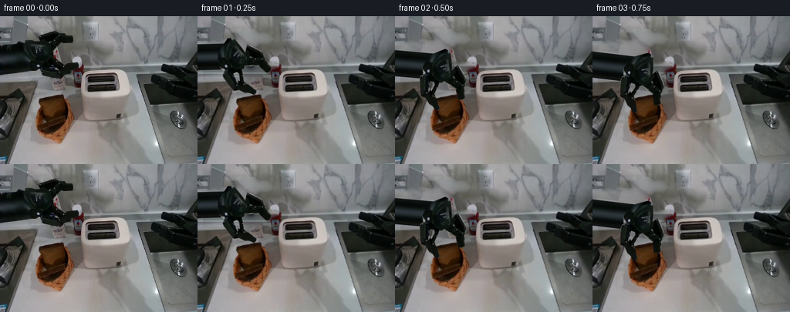

候选 01 · 2026-11-08T17:43:04.483796+00:00 · 点开播放与检查图
inspection.png

transition_check.png

代码变化
--- 上一保存版本
+++ 本次保存版本
@@ -0,0 +1,230 @@
+from pathlib import Path
+import math
+import numpy as np
+from PIL import Image, ImageDraw, ImageFilter
+import artifact_io
+
+ROOT=Path(__file__).resolve().parent
+S=4; W,H=256,192
+src=Image.open(ROOT/'first_frame.png').convert('RGB')
+a=np.asarray(src)
+base=src.resize((W*S,H*S),Image.Resampling.BICUBIC)
+rng=np.random.default_rng(924)
+
+def mask(poly, holes=()):
+ m=Image.new('L',(W*S,H*S));d=ImageDraw.Draw(m)
+ d.polygon([(round(x*S),round(y*S)) for x,y in poly],fill=255)
+ for h in holes: d.polygon([(round(x*S),round(y*S)) for x,y in h],fill=0)
+ return m.filter(ImageFilter.GaussianBlur(.23*S))
+
+def sprite(poly,holes=()):
+ im=base.convert('RGBA');im.putalpha(mask(poly,holes));return im
+
+bodypoly=[(0,37),(16,35),(20,33),(28,35),(32,31),(47,33),(57,35),(65,43),(68,51),(66,58),(59,67),(52,72),(43,72),(0,77)]
+headpoly=[(26,37),(31,31),(47,33),(57,35),(64,42),(68,51),(65,58),(61,63),(54,67),(52,72),(44,71),(35,65),(29,54)]
+uppoly=[(49.5,25),(51,23.5),(69,18.5),(72,18),(78,21.5),(80,24),(91,24),(94,25.5),(95,28),(94.5,33),(91.5,34.5),(80,34.5),(77,37),(72,43),(66,47),(62,39),(55,34)]
+lowpoly=[(58,55),(66,53),(71,56),(80,63),(87,61.5),(99,60),(101.5,61),(101.5,66),(95,68.5),(92,72),(83,75),(79,80.5),(58,78),(54,76),(51.5,68),(54,65)]
+lowhole=[(65,60),(69,60),(76,66),(71,68),(63,65)]
+head=sprite(headpoly);upper=sprite(uppoly);lower=sprite(lowpoly,[lowhole])
+armmask=Image.new('L',base.size)
+from PIL import ImageChops
+for p,holes in [(bodypoly,[]),(uppoly,[]),(lowpoly,[lowhole])]:
+ armmask=ImageChops.lighter(armmask,mask(p,holes))
+# Reconstruct only the disoccluded background, using the scene's own marble.
+yy,xx=np.mgrid[:H*S,:W*S]; x=xx/S;y=yy/S
+sy=np.clip(yy,0,H*S-1)
+sx=np.clip(((x+114)*S).astype(int),0,W*S-1)
+big=np.asarray(base).astype(float)
+wall=big[sy,sx].copy()
+# The left part of the backsplash is gently darker than the sample to its right.
+wall*=np.clip(.89+.0010*x,.89,1.02)[...,None]
+# Worktop and horizontal backsplash trim.
+for j in range(H*S):
+ y0=j/S
+ if y0>=66:
+ line=big[j,int(105*S):int(110*S)].mean(0)
+ if y0>74: line=big[j,int(91*S):int(96*S)].mean(0)
+ wall[j]=line + rng.normal(0,.55,(W*S,1))
+clean=base.copy();clean.paste(Image.fromarray(np.uint8(np.clip(wall,0,255))),(0,0),armmask)
+
+# Bread matte and cavity. The source bread is reused as the moving texture.
+breadpoly=[(50,107.3),(53,105.6),(80.8,101.8),(82.5,107),(83.5,113),(85.1,118),(84.4,125.8),(80.7,130.6),(65,135.5),(60.4,134.8),(57.2,131.1),(54.6,122),(52.6,116),(50,112.4)]
+firstbread=sprite(breadpoly)
+# Perspective resampling utility: source coordinates corresponding to output corners.
+def project(im, srcquad, dstquad):
+ A=[]; b=[]
+ for (u,v),(px,py) in zip(srcquad,dstquad):
+ u*=S;v*=S;px*=S;py*=S
+ A += [[px,py,1,0,0,0,-u*px,-u*py],[0,0,0,px,py,1,-v*px,-v*py]]
+ b += [u,v]
+ c=np.linalg.solve(np.asarray(A),np.asarray(b))
+ return im.transform(base.size,Image.Transform.PERSPECTIVE,c,Image.Resampling.BICUBIC)
+
+# Use original bread color/crumb, preserving its irregular rounded crust.
+sourcequad=[(50,107),(81,102),(86,130),(57,136)]
+canonical=project(firstbread,sourcequad,[(0,0),(33,0),(33,32),(0,32)])
+# Exact photographed second-slice cutout for the initially foreshortened pose.
+secondpoly=[(48.5,140),(51,138.8),(83.8,128.6),(85,133),(83.3,141),(59,150),(52,150),(49.5,146)]
+second=sprite(secondpoly)
+
+# Make an empty, woven inner bowl under the two removable slices.
+cavity=clean.copy()
+breadclear=mask([(49,106),(81.8,101.4),(85,110),(88,118),(87,137),(82,145),(64,153),(52,152),(49,146),(49,136),(50,127),(52,119),(50,114)])
+# Countertop that was hidden by the upper half of the bread.
+patch=np.asarray(clean).copy().astype(float)
+for j in range(int(99*S),int(155*S)):
+ col=big[j,int(96*S):int(101*S)].mean(0)
+ for k in range(int(47*S),int(90*S)):
+ patch[j,k]=col + rng.normal(0,.7,3)
+fill=Image.fromarray(np.uint8(np.clip(patch,0,255)))
+# Wicker inner bowl, projected into the basket; hand-drawn geometry is textured with scene colors.
+inner=mask([(53,125),(55,117),(77,110.5),(83,114),(87,128),(81,141),(67,151),(55,149),(51.3,139)])
+tex=np.zeros((H*S,W*S,3),float)
+noise=rng.normal(0,1.5,(H*S,W*S))
+for ch,v in enumerate([110,67,34]):
+ tex[:,:,ch]=v + 10*np.cos((x-65)*.12)+8*np.sin((y-121)*.17)+noise
+weave=(np.sin(x*2.8+y*.66)*2.1+np.cos(y*3.2-x*.6)*1.8)
+tex += weave[:,:,None]
+# Inside is darker near the back rim; woven strands on the floor catch the light.
+tex*=np.clip(.75+(y-113)*.010,.72,1.06)[...,None]
+fill.paste(Image.fromarray(np.uint8(np.clip(tex,0,255))),(0,0),inner)
+d=ImageDraw.Draw(fill)
+for offset in range(-13,34,3):
+ # Small angled strands limited below using a separate layer.
+ pass
+weavelayer=Image.new('RGBA',base.size)
+dw=ImageDraw.Draw(weavelayer)
+for z in np.arange(-20,43,3):
+ dw.line([(48*S,(125+z)*S),(89*S,(112+z)*S)],fill=(159,104,56,65),width=2)
+for z in np.arange(49,90,3):
+ dw.line([(z*S,108*S),((z+8)*S,153*S)],fill=(45,28,16,45),width=2)
+weavelayer.putalpha(ImageChops.multiply(weavelayer.getchannel('A'),inner))
+fill=Image.alpha_composite(fill.convert('RGBA'),weavelayer).convert('RGB')
+# Rear edge: braided cane around the newly revealed inner opening.
+d=ImageDraw.Draw(fill)
+d.line([(54*S,120*S),(55*S,117*S),(76*S,110.6*S),(81*S,112*S),(85*S,120*S)],fill=(147,86,41),width=3*S)
+d.line([(55*S,118*S),(76*S,112*S),(80*S,113*S)],fill=(179,115,61),width=S)
+for q in range(10):
+ cx=55+q*2.35;cy=118-(cx-55)*.29
+ d.line([(cx*S,cy*S),((cx+.9)*S,(cy+1.9)*S)],fill=(111,62,31),width=2)
+cavity.paste(fill,(0,0),breadclear)
+# Keep the photographed front and side basket rim outside the cavity mask.
+
+# Per-pixel articulated rendering. Rigid gripper components all retain source texture.
+def rigid(im, angle, wrist, shift=(0,0)):
+ th=math.radians(angle); c=math.cos(th); s=math.sin(th)
+ # forward = wrist + R * (p - source_pivot + localshift)
+ tx=wrist[0]*S;ty=wrist[1]*S;px=48*S;py=48*S
+ coeff=(c,s,px-shift[0]*S-c*tx-s*ty,-s,c,py-shift[1]*S+s*tx-c*ty)
+ return im.transform(base.size,Image.Transform.AFFINE,coeff,Image.Resampling.BICUBIC)
+
+def arm_layer(grip,angle,closure):
+ th=math.radians(angle);c=math.cos(th);s=math.sin(th)
+ # The point between the two original finger pads.
+ wrist=(grip[0]-c*43+s*(-1),grip[1]-s*43-c*(-1))
+ lay=Image.new('RGBA',base.size)
+ # A rigid forearm continues outside the view; its rotary wrist lets the gripper pitch down.
+ axis=math.atan2(wrist[1]-55,wrist[0]+65)
+ u=np.array([math.cos(axis),math.sin(axis)]);n=np.array([-u[1],u[0]])
+ p=np.array(wrist);start=p-u*220;end=p-u*8
+ d=ImageDraw.Draw(lay)
+ def P(v):return tuple(v*S)
+ # Soft specular cylindrical profile, with squared machined end collars.
+ for width in np.arange(17,0,-.45):
+ col=int(9+16*math.exp(-((width-7)/5)**2))
+ d.line([P(start),P(end)],fill=(max(0,col-3),col+2,col+3,255),width=max(1,int(width*2*S)))
+ highlight_start=start-n*7;highlight_end=end-n*7
+ d.line([P(highlight_start),P(highlight_end)],fill=(35,42,44,255),width=2*S)
+ for t in [14,19,26]:
+ cen=p-u*t
+ d.line([P(cen+n*15),P(cen-n*15)],fill=(8,14,15,255),width=S)
+ # Back rotary coupler.
+ cx,cy=wrist
+ d.ellipse(((cx-13)*S,(cy-13)*S,(cx+13)*S,(cy+13)*S),fill=(13,21,23),outline=(43,51,52),width=S)
+ lay=Image.alpha_composite(lay,rigid(head,angle,wrist))
+ lay=Image.alpha_composite(lay,rigid(upper,angle,wrist,(0,closure)))
+ lay=Image.alpha_composite(lay,rigid(lower,angle,wrist,(0,-closure)))
+ return lay
+
+def quad_center(cx,cy,tilt=0,rot=0,width=33,height=32):
+ # Rigid rectangular slice pitched around its horizontal centre axis.
+ h=height*math.cos(math.radians(tilt))
+ c=math.cos(math.radians(rot));s=math.sin(math.radians(rot))
+ return [(cx+c*u-s*v,cy+s*u+c*v) for u,v in [(-width/2,-h/2),(width/2,-h/2),(width/2,h/2),(-width/2,h/2)]]
+
+def bread_layer(cx,cy,tilt=0,rot=0,slot=None,source=False):
+ quad=quad_center(cx,cy,tilt,rot)
+ lay=project(canonical,[(0,0),(33,0),(33,32),(0,32)],quad)
+ # The thickness is a separate rigid, darker crust edge.
+ edge=Image.new('RGBA',base.size);d=ImageDraw.Draw(edge)
+ side=[quad[1],(quad[1][0]+1.9,quad[1][1]+1.2),(quad[2][0]+1.9,quad[2][1]+1.2),quad[2]]
+ d.polygon([(u*S,v*S) for u,v in side],fill=(72,35,13,255))
+ bot=[quad[2],(quad[2][0]+1.9,quad[2][1]+1.2),(quad[3][0]+1.9,quad[3][1]+1.2),quad[3]]
+ d.polygon([(u*S,v*S) for u,v in bot],fill=(79,39,16,255))
+ lay=Image.alpha_composite(edge,lay)
+ if slot:
+ # Front metal edge of each slot occludes the inserted bread.
+ rim=84.5 if slot=='back' else 96.3
+ alpha=np.asarray(lay.getchannel('A')).copy()
+ lim=(rim-(x-114)*.042)
+ clip=np.clip((lim-y)*S,0,1)
+ alpha=np.uint8(alpha*clip)
+ lay.putalpha(Image.fromarray(alpha))
+ return lay
+
+def compose_shadow(canvas,layer, strength=.14, dx=5,dy=7,blur=3):
+ sh=Image.new('RGBA',base.size,(0,0,0,0))
+ m=layer.getchannel('A').filter(ImageFilter.GaussianBlur(blur*S))
+ m=m.point(lambda v:int(v*strength))
+ shifted=Image.new('L',base.size);shifted.paste(m,(int(dx*S),int(dy*S)))
+ # Avoid casting a fake shadow on the foreground robotic arm.
+ sh.putalpha(shifted)
+ return Image.alpha_composite(canvas,sh)
+
+# grip centre, gripper pitch, jaw closure, first bread, second bread.
+# Each action has approach, grasp, lift, align, lower, release phases.
+poses={
+ 1:((79,81),44,0),2:((69,108),78,0),3:((68.5,113),85,2.0),
+ 4:((90,73),85,2.0),5:((131,54),88,2.0),6:((131,71),88,2.0),
+ 7:((131,62),88,0),8:((92,88),85,0),9:((67,136),79,1.4),
+ 10:((74,111),83,2.0),11:((103,73),87,2.0),12:((132,64),88,2.0),
+ 13:((132,79),88,2.0),14:((132,69),88,0),15:((158,108),53,6),
+ 16:((164,119),53,7),17:((164,123),53,7),18:((125,82),45,1),19:((92,54),8,0)
+}
+b1={4:(90,80,0,-6,None),5:(131,61,0,-2,'back'),6:(131,78,0,-2,'back')}
+b2={10:(74,117,43,-12,None),11:(103,80,15,-5,None),12:(132,71,0,-2,'front'),13:(132,86,0,-2,'front')}
+frames=[a.copy()]
+for i in range(1,20):
+ # Static scene, with no camera movement at all.
+ if i<=3:
+ canvas=clean.convert('RGBA')
+ else:
+ canvas=cavity.convert('RGBA')
+ if i<=9: canvas=Image.alpha_composite(canvas,second)
+ breads=[]
+ if i in b1: breads.append(bread_layer(*b1[i]))
+ elif i>=7:
+ depth=0 if i<17 else (2 if i==17 else 5)
+ breads.append(bread_layer(131,91+depth,0,-2,'back'))
+ if i in b2:breads.append(bread_layer(*b2[i]))
+ elif i>=14:
+ depth=0 if i<17 else (2 if i==17 else 5)
+ breads.append(bread_layer(132,102+depth,0,-2,'front'))
+ for bread in breads:
+ # Only lifted bread casts a distinct soft moving shadow.
+ canvas=compose_shadow(canvas,bread,.10,4,8,2.1)
+ canvas=Image.alpha_composite(canvas,bread)
+ grip,ang,close=poses[i]
+ arm=arm_layer(grip,ang,close)
+ canvas=compose_shadow(canvas,arm,.10,7,9,4.5)
+ canvas=Image.alpha_composite(canvas,arm)
+ if i>=17:
+ # Toaster control indicator comes on when pressed; no instant toast/pop-up.
+ gl=Image.new('RGBA',base.size);dg=ImageDraw.Draw(gl)
+ dg.ellipse((153.0*S,128.3*S,155.3*S,130.2*S),fill=(245,100,30,220))
+ glow=gl.filter(ImageFilter.GaussianBlur(1.6*S));glow.putalpha(glow.getchannel('A').point(lambda v:int(v*.6)))
+ canvas=Image.alpha_composite(canvas,glow)
+ canvas=Image.alpha_composite(canvas,gl)
+ frames.append(np.asarray(canvas.convert('RGB').resize((W,H),Image.Resampling.LANCZOS)))
+frames=np.stack(frames).astype(np.uint8)
+artifact_io.save(frames,ROOT)
候选 03 · 2026-11-08T17:47:07.174915+00:00 · 点开播放与检查图
inspection.png

transition_check.png

代码变化
--- 上一保存版本
+++ 本次保存版本
@@ -3,6 +3,9 @@
import numpy as np
from PIL import Image, ImageDraw, ImageFilter
import artifact_io
+from scipy import sparse
+from scipy.sparse.linalg import spsolve
+from scipy.ndimage import binary_dilation
ROOT=Path(__file__).resolve().parent
S=4; W,H=256,192
@@ -45,7 +48,39 @@
line=big[j,int(105*S):int(110*S)].mean(0)
if y0>74: line=big[j,int(91*S):int(96*S)].mean(0)
wall[j]=line + rng.normal(0,.55,(W*S,1))
-clean=base.copy();clean.paste(Image.fromarray(np.uint8(np.clip(wall,0,255))),(0,0),armmask)
+def poisson_patch(original, candidate, region):
+ # Match the texture gradients while respecting the actual image at the boundary.
+ select=np.asarray(region.resize((W,H),Image.Resampling.LANCZOS))>10
+ select=binary_dilation(select,iterations=2)
+ pts=np.argwhere(select); ids=np.full((H,W),-1,int);ids[select]=np.arange(len(pts))
+ rows=[];cols=[];vals=[];rhs=np.zeros((len(pts),3))
+ for k,(j,i) in enumerate(pts):
+ n=0
+ for dj,di in [(0,1),(0,-1),(1,0),(-1,0)]:
+ jj,ii=j+dj,i+di
+ if not(0<=jj<H and 0<=ii<W):continue
+ n+=1
+ rhs[k]+=(candidate[j,i]-candidate[jj,ii])*.70
+ if select[jj,ii]:rows.append(k);cols.append(ids[jj,ii]);vals.append(-1)
+ else:rhs[k]+=original[jj,ii]
+ # Weak screen term avoids long dark boundary bleeding.
+ rows.append(k);cols.append(k);vals.append(n+.04)
+ rhs[k]+=.04*candidate[j,i]
+ mat=sparse.csr_matrix((vals,(rows,cols)),shape=(len(pts),len(pts)))
+ result=original.copy().astype(float);result[select]=spsolve(mat,rhs)
+ return Image.fromarray(np.uint8(np.clip(result,0,255))).resize(base.size,Image.Resampling.BICUBIC),Image.fromarray(np.uint8(select)*255).resize(base.size,Image.Resampling.BILINEAR)
+# A clean portion of the marble provides the occluded wall texture, not repeated objects.
+candidate=a.astype(float).copy()
+for j in range(H):
+ for k in range(W):
+ if j<64:
+ candidate[j,k]=a[j,145+int(k*.42)%53]*.97
+ elif j<75:
+ candidate[j,k]=np.mean(a[j,170:178],axis=0)
+ else:
+ candidate[j,k]=np.mean(a[j,94:100],axis=0)
+repaired,blendregion=poisson_patch(a.astype(float),candidate,armmask)
+clean=base.copy();clean.paste(repaired,(0,0),blendregion)
# Bread matte and cavity. The source bread is reused as the moving texture.
breadpoly=[(50,107.3),(53,105.6),(80.8,101.8),(82.5,107),(83.5,113),(85.1,118),(84.4,125.8),(80.7,130.6),(65,135.5),(60.4,134.8),(57.2,131.1),(54.6,122),(52.6,116),(50,112.4)]
@@ -73,15 +108,15 @@
# Countertop that was hidden by the upper half of the bread.
patch=np.asarray(clean).copy().astype(float)
for j in range(int(99*S),int(155*S)):
- col=big[j,int(96*S):int(101*S)].mean(0)
+ col=big[j,int(99*S):int(102*S)].mean(0)
for k in range(int(47*S),int(90*S)):
patch[j,k]=col + rng.normal(0,.7,3)
fill=Image.fromarray(np.uint8(np.clip(patch,0,255)))
# Wicker inner bowl, projected into the basket; hand-drawn geometry is textured with scene colors.
-inner=mask([(53,125),(55,117),(77,110.5),(83,114),(87,128),(81,141),(67,151),(55,149),(51.3,139)])
+inner=mask([(51,128),(55,117),(77,110.5),(83,114),(87,128),(84,139),(78,146),(64,152),(53,150),(49,145)])
tex=np.zeros((H*S,W*S,3),float)
noise=rng.normal(0,1.5,(H*S,W*S))
-for ch,v in enumerate([110,67,34]):
+for ch,v in enumerate([92,53,26]):
tex[:,:,ch]=v + 10*np.cos((x-65)*.12)+8*np.sin((y-121)*.17)+noise
weave=(np.sin(x*2.8+y*.66)*2.1+np.cos(y*3.2-x*.6)*1.8)
tex += weave[:,:,None]
@@ -95,9 +130,9 @@
weavelayer=Image.new('RGBA',base.size)
dw=ImageDraw.Draw(weavelayer)
for z in np.arange(-20,43,3):
- dw.line([(48*S,(125+z)*S),(89*S,(112+z)*S)],fill=(159,104,56,65),width=2)
+ dw.line([(48*S,(125+z)*S),(89*S,(112+z)*S)],fill=(159,104,56,32),width=2)
for z in np.arange(49,90,3):
- dw.line([(z*S,108*S),((z+8)*S,153*S)],fill=(45,28,16,45),width=2)
+ dw.line([(z*S,108*S),((z+8)*S,153*S)],fill=(45,28,16,26),width=2)
weavelayer.putalpha(ImageChops.multiply(weavelayer.getchannel('A'),inner))
fill=Image.alpha_composite(fill.convert('RGBA'),weavelayer).convert('RGB')
# Rear edge: braided cane around the newly revealed inner opening.
@@ -107,7 +142,18 @@
for q in range(10):
cx=55+q*2.35;cy=118-(cx-55)*.29
d.line([(cx*S,cy*S),((cx+.9)*S,(cy+1.9)*S)],fill=(111,62,31),width=2)
-cavity.paste(fill,(0,0),breadclear)
+# Blend the exposed counter to its surrounding photographed pixels rather than
+# leaving a silhouette of the removed bread on the worktop.
+counter_region=mask([(49,106),(81.8,101.4),(85,110),(84,116),(76,121),(54,123),(50,118)])
+counter_candidate=np.asarray(clean.resize((W,H))).astype(float).copy()
+for j in range(99,126):
+ for k in range(46,88):
+ t=(k-46)/42
+ counter_candidate[j,k]=(1-t)*a[j,44].astype(float)+t*a[j,96].astype(float)
+cp,cm=poisson_patch(np.asarray(clean.resize((W,H))).astype(float),counter_candidate,counter_region)
+cavity.paste(cp,(0,0),cm)
+# Original bread matte, union the top area; all filled floor is inside the rim.
+cavity.paste(fill,(0,0),ImageChops.multiply(breadclear,inner))
# Keep the photographed front and side basket rim outside the cavity mask.
# Per-pixel articulated rendering. Rigid gripper components all retain source texture.
@@ -130,12 +176,17 @@
d=ImageDraw.Draw(lay)
def P(v):return tuple(v*S)
# Soft specular cylindrical profile, with squared machined end collars.
- for width in np.arange(17,0,-.45):
- col=int(9+16*math.exp(-((width-7)/5)**2))
- d.line([P(start),P(end)],fill=(max(0,col-3),col+2,col+3,255),width=max(1,int(width*2*S)))
- highlight_start=start-n*7;highlight_end=end-n*7
- d.line([P(highlight_start),P(highlight_end)],fill=(35,42,44,255),width=2*S)
- for t in [14,19,26]:
+ distance=(x-p[0])*n[0]+(y-p[1])*n[1]
+ along=(x-p[0])*u[0]+(y-p[1])*u[1]
+ profile=np.mean(a[37:74,4:16].astype(float),axis=1)
+ at=np.clip((distance+17)/34*36,0,36)
+ lo=at.astype(int);hi=np.clip(lo+1,0,36);t=(at-lo)[...,None]
+ colors=profile[lo]*(1-t)+profile[hi]*t
+ colors+=np.sin(along*.18)[...,None]*.6
+ coverage=np.clip((17-abs(distance))*S,0,1)*np.clip((-8-along)*S,0,1)
+ rgba=np.concatenate([np.uint8(np.clip(colors,0,255)),np.uint8(coverage[...,None]*255)],axis=2)
+ lay=Image.fromarray(rgba);d=ImageDraw.Draw(lay)
+ for t in [16,20]:
cen=p-u*t
d.line([P(cen+n*15),P(cen-n*15)],fill=(8,14,15,255),width=S)
# Back rotary coupler.
命令 5 · 2026-11-08T17:43:03.610194+00:00/bin/bash -lc "cat > generate.py <<'PY'
from pathlib import Path
import math
import numpy as np
from PIL import Image, ImageDraw, ImageFilter
import artifact_io
ROOT=Path(__file__).resolve().parent
S=4; W,H=256,192
src=Image.open(ROOT/'first_frame.png').convert('RGB')
a=np.asarray(src)
base=src.resize((W*S,H*S),Image.Resampling.BICUBIC)
rng=np.random.default_rng(924)
def mask(poly, holes=()):
m=Image.new('L',(W*S,H*S));d=ImageDraw.Draw(m)
d.polygon([(round(x*S),round(y*S)) for x,y in poly],fill=255)
for h in holes: d.polygon([(round(x*S),round(y*S)) for x,y in h],fill=0)
return m.filter(ImageFilter.GaussianBlur(.23*S))
def sprite(poly,holes=()):
im=base.convert('RGBA');im.putalpha(mask(poly,holes));return im
bodypoly=[(0,37),(16,35),(20,33),(28,35),(32,31),(47,33),(57,35),(65,43),(68,51),(66,58),(59,67),(52,72),(43,72),(0,77)]
headpoly=[(26,37),(31,31),(47,33),(57,35),(64,42),(68,51),(65,58),(61,63),(54,67),(52,72),(44,71),(35,65),(29,54)]
uppoly=[(49.5,25),(51,23.5),(69,18.5),(72,18),(78,21.5),(80,24),(91,24),(94,25.5),(95,28),(94.5,33),(91.5,34.5),(80,34.5),(77,37),(72,43),(66,47),(62,39),(55,34)]
lowpoly=[(58,55),(66,53),(71,56),(80,63),(87,61.5),(99,60),(101.5,61),(101.5,66),(95,68.5),(92,72),(83,75),(79,80.5),(58,78),(54,76),(51.5,68),(54,65)]
lowhole=[(65,60),(69,60),(76,66),(71,68),(63,65)]
head=sprite(headpoly);upper=sprite(uppoly);lower=sprite(lowpoly,[lowhole])
armmask=Image.new('L',base.size)
from PIL import ImageChops
for p,holes in [(bodypoly,[]),(uppoly,[]),(lowpoly,[lowhole])]:
armmask=ImageChops.lighter(armmask,mask(p,holes))
# Reconstruct only the disoccluded background, using the scene's own marble.
yy,xx=np.mgrid[:H*S,:W*S]; x=xx/S;y=yy/S
sy=np.clip(yy,0,H*S-1)
sx=np.clip(((x+114)*S).astype(int),0,W*S-1)
big=np.asarray(base).astype(float)
wall=big[sy,sx].copy()
# The left part of the backsplash is gently darker than the sample to its right.
wall*=np.clip(.89+.0010*x,.89,1.02)[...,None]
# Worktop and horizontal backsplash trim.
for j in range(H*S):
y0=j/S
if y0>=66:
line=big[j,int(105*S):int(110*S)].mean(0)
if y0>74: line=big[j,int(91*S):int(96*S)].mean(0)
wall[j]=line + rng.normal(0,.55,(W*S,1))
clean=base.copy();clean.paste(Image.fromarray(np.uint8(np.clip(wall,0,255))),(0,0),armmask)
# Bread matte and cavity. The source bread is reused as the moving texture.
breadpoly=[(50,107.3),(53,105.6),(80.8,101.8),(82.5,107),(83.5,113),(85.1,118),(84.4,125.8),(80.7,130.6),(65,135.5),(60.4,134.8),(57.2,131.1),(54.6,122),(52.6,116),(50,112.4)]
firstbread=sprite(breadpoly)
# Perspective resampling utility: source coordinates corresponding to output corners.
def project(im, srcquad, dstquad):
A=[]; b=[]
for (u,v),(px,py) in zip(srcquad,dstquad):
u*=S;v*=S;px*=S;py*=S
A += [[px,py,1,0,0,0,-u*px,-u*py],[0,0,0,px,py,1,-v*px,-v*py]]
b += [u,v]
c=np.linalg.solve(np.asarray(A),np.asarray(b))
return im.transform(base.size,Image.Transform.PERSPECTIVE,c,Image.Resampling.BICUBIC)
# Use original bread color/crumb, preserving its irregular rounded crust.
sourcequad=[(50,107),(81,102),(86,130),(57,136)]
canonical=project(firstbread,sourcequad,[(0,0),(33,0),(33,32),(0,32)])
# Exact photographed second-slice cutout for the initially foreshortened pose.
secondpoly=[(48.5,140),(51,138.8),(83.8,128.6),(85,133),(83.3,141),(59,150),(52,150),(49.5,146)]
second=sprite(secondpoly)
# Make an empty, woven inner bowl under the two removable slices.
cavity=clean.copy()
breadclear=mask([(49,106),(81.8,101.4),(85,110),(88,118),(87,137),(82,145),(64,153),(52,152),(49,146),(49,136),(50,127),(52,119),(50,114)])
# Countertop that was hidden by the upper half of the bread.
patch=np.asarray(clean).copy().astype(float)
for j in range(int(99*S),int(155*S)):
col=big[j,int(96*S):int(101*S)].mean(0)
for k in range(int(47*S),int(90*S)):
patch[j,k]=col + rng.normal(0,.7,3)
fill=Image.fromarray(np.uint8(np.clip(patch,0,255)))
# Wicker inner bowl, projected into the basket; hand-drawn geometry is textured with scene colors.
inner=mask([(53,125),(55,117),(77,110.5),(83,114),(87,128),(81,141),(67,151),(55,149),(51.3,139)])
tex=np.zeros((H*S,W*S,3),float)
noise=rng.normal(0,1.5,(H*S,W*S))
for ch,v in enumerate([110,67,34]):
tex[:,:,ch]=v + 10*np.cos((x-65)*.12)+8*np.sin((y-121)*.17)+noise
weave=(np.sin(x*2.8+y*.66)*2.1+np.cos(y*3.2-x*.6)*1.8)
tex += weave[:,:,None]
# Inside is darker near the back rim; woven strands on the floor catch the light.
tex*=np.clip(.75+(y-113)*.010,.72,1.06)[...,None]
fill.paste(Image.fromarray(np.uint8(np.clip(tex,0,255))),(0,0),inner)
d=ImageDraw.Draw(fill)
for offset in range(-13,34,3):
# Small angled strands limited below using a separate layer.
pass
weavelayer=Image.new('RGBA',base.size)
dw=ImageDraw.Draw(weavelayer)
for z in np.arange(-20,43,3):
dw.line([(48*S,(125+z)*S),(89*S,(112+z)*S)],fill=(159,104,56,65),width=2)
for z in np.arange(49,90,3):
dw.line([(z*S,108*S),((z+8)*S,153*S)],fill=(45,28,16,45),width=2)
weavelayer.putalpha(ImageChops.multiply(weavelayer.getchannel('A'),inner))
fill=Image.alpha_composite(fill.convert('RGBA'),weavelayer).convert('RGB')
# Rear edge: braided cane around the newly revealed inner opening.
d=ImageDraw.Draw(fill)
d.line([(54*S,120*S),(55*S,117*S),(76*S,110.6*S),(81*S,112*S),(85*S,120*S)],fill=(147,86,41),width=3*S)
d.line([(55*S,118*S),(76*S,112*S),(80*S,113*S)],fill=(179,115,61),width=S)
for q in range(10):
cx=55+q*2.35;cy=118-(cx-55)*.29
d.line([(cx*S,cy*S),((cx+.9)*S,(cy+1.9)*S)],fill=(111,62,31),width=2)
cavity.paste(fill,(0,0),breadclear)
# Keep the photographed front and side basket rim outside the cavity mask.
# Per-pixel articulated rendering. Rigid gripper components all retain source texture.
def rigid(im, angle, wrist, shift=(0,0)):
th=math.radians(angle); c=math.cos(th); s=math.sin(th)
# forward = wrist + R * (p - source_pivot + localshift)
tx=wrist[0]*S;ty=wrist[1]*S;px=48*S;py=48*S
coeff=(c,s,px-shift[0]*S-c*tx-s*ty,-s,c,py-shift[1]*S+s*tx-c*ty)
return im.transform(base.size,Image.Transform.AFFINE,coeff,Image.Resampling.BICUBIC)
def arm_layer(grip,angle,closure):
th=math.radians(angle);c=math.cos(th);s=math.sin(th)
# The point between the two original finger pads.
wrist=(grip[0]-c*43+s*(-1),grip[1]-s*43-c*(-1))
lay=Image.new('RGBA',base.size)
# A rigid forearm continues outside the view; its rotary wrist lets the gripper pitch down.
axis=math.atan2(wrist[1]-55,wrist[0]+65)
u=np.array([math.cos(axis),math.sin(axis)]);n=np.array([-u[1],u[0]])
p=np.array(wrist);start=p-u*220;end=p-u*8
d=ImageDraw.Draw(lay)
def P(v):return tuple(v*S)
# Soft specular cylindrical profile, with squared machined end collars.
for width in np.arange(17,0,-.45):
col=int(9+16*math.exp(-((width-7)/5)**2))
d.line([P(start),P(end)],fill=(max(0,col-3),col+2,col+3,255),width=max(1,int(width*2*S)))
highlight_start=start-n*7;highlight_end=end-n*7
d.line([P(highlight_start),P(highlight_end)],fill=(35,42,44,255),width=2*S)
for t in [14,19,26]:
cen=p-u*t
d.line([P(cen+n*15),P(cen-n*15)],fill=(8,14,15,255),width=S)
# Back rotary coupler.
cx,cy=wrist
d.ellipse(((cx-13)*S,(cy-13)*S,(cx+13)*S,(cy+13)*S),fill=(13,21,23),outline=(43,51,52),width=S)
lay=Image.alpha_composite(lay,rigid(head,angle,wrist))
lay=Image.alpha_composite(lay,rigid(upper,angle,wrist,(0,closure)))
lay=Image.alpha_composite(lay,rigid(lower,angle,wrist,(0,-closure)))
return lay
def quad_center(cx,cy,tilt=0,rot=0,width=33,height=32):
# Rigid rectangular slice pitched around its horizontal centre axis.
h=height*math.cos(math.radians(tilt))
c=math.cos(math.radians(rot));s=math.sin(math.radians(rot))
return [(cx+c*u-s*v,cy+s*u+c*v) for u,v in [(-width/2,-h/2),(width/2,-h/2),(width/2,h/2),(-width/2,h/2)]]
def bread_layer(cx,cy,tilt=0,rot=0,slot=None,source=False):
quad=quad_center(cx,cy,tilt,rot)
lay=project(canonical,[(0,0),(33,0),(33,32),(0,32)],quad)
# The thickness is a separate rigid, darker crust edge.
edge=Image.new('RGBA',base.size);d=ImageDraw.Draw(edge)
side=[quad[1],(quad[1][0]+1.9,quad[1][1]+1.2),(quad[2][0]+1.9,quad[2][1]+1.2),quad[2]]
d.polygon([(u*S,v*S) for u,v in side],fill=(72,35,13,255))
bot=[quad[2],(quad[2][0]+1.9,quad[2][1]+1.2),(quad[3][0]+1.9,quad[3][1]+1.2),quad[3]]
d.polygon([(u*S,v*S) for u,v in bot],fill=(79,39,16,255))
lay=Image.alpha_composite(edge,lay)
if slot:
# Front metal edge of each slot occludes the inserted bread.
rim=84.5 if slot=='back' else 96.3
alpha=np.asarray(lay.getchannel('A')).copy()
lim=(rim-(x-114)*.042)
clip=np.clip((lim-y)*S,0,1)
alpha=np.uint8(alpha*clip)
lay.putalpha(Image.fromarray(alpha))
return lay
def compose_shadow(canvas,layer, strength=.14, dx=5,dy=7,blur=3):
sh=Image.new('RGBA',base.size,(0,0,0,0))
m=layer.getchannel('A').filter(ImageFilter.GaussianBlur(blur*S))
m=m.point(lambda v:int(v*strength))
shifted=Image.new('L',base.size);shifted.paste(m,(int(dx*S),int(dy*S)))
# Avoid casting a fake shadow on the foreground robotic arm.
sh.putalpha(shifted)
return Image.alpha_composite(canvas,sh)
# grip centre, gripper pitch, jaw closure, first bread, second bread.
# Each action has approach, grasp, lift, align, lower, release phases.
poses={
1:((79,81),44,0),2:((69,108),78,0),3:((68.5,113),85,2.0),
4:((90,73),85,2.0),5:((131,54),88,2.0),6:((131,71),88,2.0),
7:((131,62),88,0),8:((92,88),85,0),9:((67,136),79,1.4),
10:((74,111),83,2.0),11:((103,73),87,2.0),12:((132,64),88,2.0),
13:((132,79),88,2.0),14:((132,69),88,0),15:((158,108),53,6),
16:((164,119),53,7),17:((164,123),53,7),18:((125,82),45,1),19:((92,54),8,0)
}
b1={4:(90,80,0,-6,None),5:(131,61,0,-2,'back'),6:(131,78,0,-2,'back')}
b2={10:(74,117,43,-12,None),11:(103,80,15,-5,None),12:(132,71,0,-2,'front'),13:(132,86,0,-2,'front')}
frames=[a.copy()]
for i in range(1,20):
# Static scene, with no camera movement at all.
if i<=3:
canvas=clean.convert('RGBA')
else:
canvas=cavity.convert('RGBA')
if i<=9: canvas=Image.alpha_composite(canvas,second)
breads=[]
if i in b1: breads.append(bread_layer(*b1[i]))
elif i>=7:
depth=0 if i<17 else (2 if i==17 else 5)
breads.append(bread_layer(131,91+depth,0,-2,'back'))
if i in b2:breads.append(bread_layer(*b2[i]))
elif i>=14:
depth=0 if i<17 else (2 if i==17 else 5)
breads.append(bread_layer(132,102+depth,0,-2,'front'))
for bread in breads:
# Only lifted bread casts a distinct soft moving shadow.
canvas=compose_shadow(canvas,bread,.10,4,8,2.1)
canvas=Image.alpha_composite(canvas,bread)
grip,ang,close=poses[i]
arm=arm_layer(grip,ang,close)
canvas=compose_shadow(canvas,arm,.10,7,9,4.5)
canvas=Image.alpha_composite(canvas,arm)
if i>=17:
# Toaster control indicator comes on when pressed; no instant toast/pop-up.
gl=Image.new('RGBA',base.size);dg=ImageDraw.Draw(gl)
dg.ellipse((153.0*S,128.3*S,155.3*S,130.2*S),fill=(245,100,30,220))
glow=gl.filter(ImageFilter.GaussianBlur(1.6*S));glow.putalpha(glow.getchannel('A').point(lambda v:int(v*.6)))
canvas=Image.alpha_composite(canvas,glow)
canvas=Image.alpha_composite(canvas,gl)
frames.append(np.asarray(canvas.convert('RGB').resize((W,H),Image.Resampling.LANCZOS)))
frames=np.stack(frames).astype(np.uint8)
artifact_io.save(frames,ROOT)
PY
python generate.py"exit 0